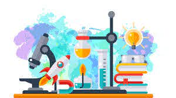

 |
NAME: Tiffany Reilly Monaghan | |
| RESUME OBJECTIVE
A Bachelor of Science student. I am currently in final year of my degree majoring in Biology and Chemsitry. I am eager to bein my career in a laboratory based enviornment. |
||
|
ExperiencesLaboratory ExperienceOver the four years of my degree, I have undergone at minimum six hours of lab time per week. This have prepared me for working in a laboratory outside of college. I have spent hours making up solutions from scratch in the chemistry lab, followed by making a product from the solution and crystallising it in order to determine the purity of the new formed product. In every lab my percentage yield would be above 70% and so I feel that by doing this many times in the lab, I could now confidently create a product in an effiecnt and timely manner. Retail ExperienceI have four years of retail experience also. In my time in retail I was a key holder. This meant that I was in charge of opening and closing the store at the weekends. I also had to manage money and supervise other workers to ensure all of the jobs were being done. This experience has taught me a lot about responsiblity and leadership. I feel that I could now take on a lot of tasks with little supervision. |
|
|
ProjectsLab Skills ProjectI had to carry out an experiment in which I was given no information about other than my starting materials and the product that I had to form at the end. I had to do a lot of research for this and look into how I would make the product and what would be the best technique to use to produce it. In the end I was graded on my research technique and how I chose the best technique that would include products from the lab and that I knew I could get the experiemtn done in the time given. Third Year DissertationI have carried out a dissertation on Carbapenem-resistant Enterobacteriacea. I was given several weeks to research my title and condense my findings in a 3,000 word project. From this project I learned about various useful databases such as pubmed and The Science Journal. I was awarded a first class honours for my work. |
|
| ||